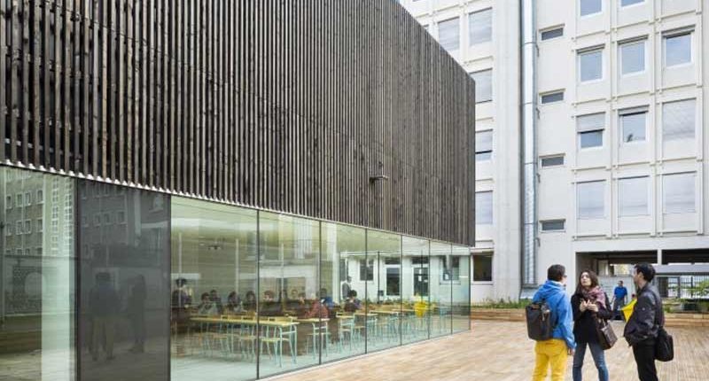
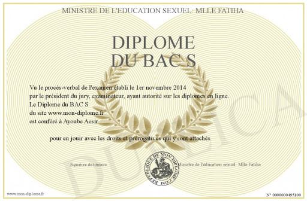

Stage d’été chez Microsoft
Stage d’été chez Microsoft
J’ai eu l’opportunité d’effectuer un stage d’été chez Microsoft l’été dernier de Juillet à Septembre 2019.
Cela m’a permis de me créer un entourage professionnel et d’acquérir des connaissances.
Notamment sur le fonctionnement d’une entreprise de cette envergure et comment elle fait pour gérer ses milliers d’employés.
Voici ce que j'ai particulièrement aimé dans ce stage:
Ce que j'ai appris
La cantine gratuite
La ville du stage
Le salaire
 IUT de Paris
IUT de Paris

Je suis depuis un an et demi maintenant un cursus informatique dans l’IUT de Paris, le meilleur de la planète !
Cette IUT a la particularité de posséder un environnement très sympathique et je m’y retrouve parfaitement.
Voici un tableau récapitulant mes notes dans différentes matières.
| Matière | Coefficient | Note |
|---|
| Moyenne générale | 16.5 |
| Bases de l'informatique | 13 | 17 |
| IAP | 3.5 | 17 |
| SDA | 2.5 | 18 |
| IBD | 3.5 | 16.5 |
| CDIN | 2.5 | 18.5 |
| PJSI1 | 1.5 | 14 |
| Bases de culture scientifique, sociale et humaine | 8 | 16 |
| Mathématiques discrètes | 2.5 | 17 |
| Algèbre Linéaire | 2 | 18 |
| Environnement économique | 1.5 | 16.5 |
| FDO | 2.5 | 19 |
| Communication | 2.5 | 19 |
| Anglais | 1.5 | 14 |
| PPP | 1.5 | 14 |
| Pas d'absences signalés |
 Baccalauréat
Baccalauréat
J’ai bien sûr mon diplôme du baccalauréat scientifique.
Mais pas que, je l’ai eu mention bien ! De quoi en être fier.
J'ai travaillé dur pour l'avoir, ce n'était pas donné.
Scientifique en plus, je me rappelle l'avoir accroché sur mon mur pendant des mois!
Une vraie fierté pour tout possédeur de ce diplôme. Le voici.
